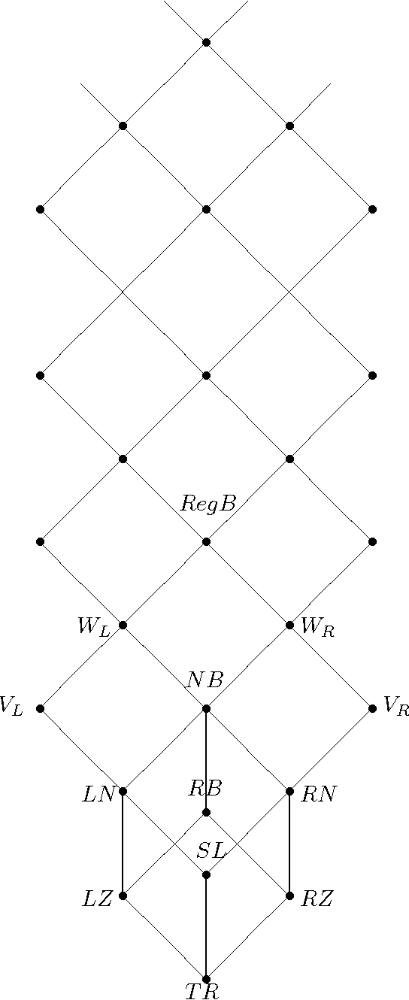

"이제 나는
어떠한 저항도 하지 않기로
결심했다."
1914년 8월 26일, 비트겐슈타인.
논리학
수학
물리학
전산학
컴퓨터공학
매체학
음악
철학
『기초 정수론』
『구체수학』
『미적분 1』
『미적분 2』
『해석학 1』
『해석학 2』
『실수 및 복소수 해석학』
『일반위상수학』
00장
서문
01장
정초
02장
정제성
03장
소수와 소수 분포
04장
합동 이론
05장
페르마 정리
06장
정수론적 함수
07장
페르마 정리 일반화 - 오일러 정리
08장
원시근과 지표
09장
이차상호법칙
10장
암호론 입문
11장
특별한 형태의 수들
12장
제곱들의 합을 통한 정수 표현
13장
해석 기하학에 대한 벡터 대수 응용
14장
피보나치 수
15장
연분수
16장
현대적 발전들
